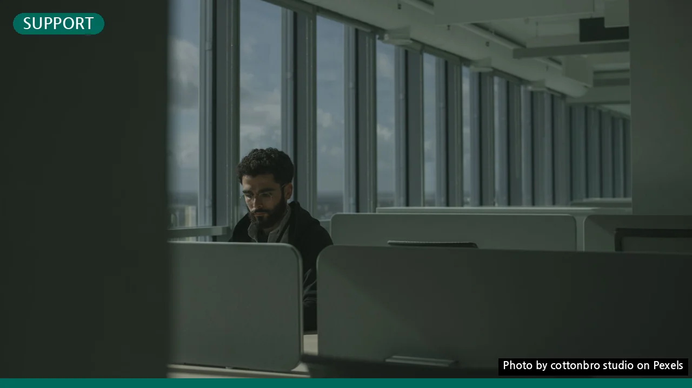

국민취업지원제도, 2026년 신청 조건부터 수당까지 총정리
사진: cottonbro studio / Pexels (무료 이미지, 출처 표기)
복잡하게 느껴지는 국민취업지원제도, 이것부터 확인하세요
국민취업지원제도 신청을 앞두고 복잡한 조건과 절차 때문에 망설이셨나요? 이 글은 2026년 8월 기준으로 1유형과 2유형의 지원 조건부터 실제 신청 방법, 그리고 받을 수 있는 수당까지, 여러분이 궁금해하는 모든 정보를 쉽고 정확하게 정리해드립니다. 지금 바로 나에게 맞는 제도를 확인하고 성공적인 취업을 위한 첫걸음을 시작해보세요.
국민취업지원제도, 나에게 맞는 유형은? (지원 대상 및 조건 비교)
국민취업지원제도는 취업을 희망하는 구직자에게 취업지원 서비스를 제공하고 생활 안정을 위한 최소한의 소득을 지원하는 제도입니다. 크게 두 가지 유형(1유형, 2유형)으로 나뉘며, 각 유형별로 지원 대상과 내용에 차이가 있습니다.
고용노동부 공식 자료에 따르면, 핵심은 '소득 및 재산 요건'과 '취업 경험'입니다. 아래 표를 통해 주요 조건을 비교해보고, 본인이 어떤 유형에 해당하는지 먼저 확인해보는 것이 중요합니다.
보다 자세한 자격 요건은 2026년 8월 기준으로 국민취업지원제도 공식 홈페이지 또는 고용노동부 고객상담센터(국번없이 1350)에서 확인할 수 있습니다.
얼마나 받을 수 있나요? (지원 내용 상세 안내)
각 유형별로 받을 수 있는 지원 내용은 구직자의 상황과 제도 참여 계획에 따라 달라집니다.
- 1유형 (구직촉진수당): 월 50만원씩 최대 6개월간 총 300만원을 지급받을 수 있습니다. 이 수당은 취업활동계획을 성실히 이행하는 조건으로 지급되며, 가족 구성원 수에 따라 추가 지원도 가능합니다.
- 2유형 (취업활동비용): 취업지원 프로그램 참여 시 발생하는 식비, 교통비 등 취업활동에 필요한 실비를 지원받을 수 있습니다. 구직촉진수당과는 달리 정기적인 현금 지원이 아닙니다.
두 유형 모두 직업훈련, 일 경험 프로그램, 심리상담, 취업 알선 등 다양한 취업지원 서비스를 기본으로 제공합니다. 이 서비스는 구직자의 취업 역량을 강화하고 성공적인 취업으로 이어질 수 있도록 돕는 핵심 요소입니다.
국민취업지원제도 신청, 딱 5단계로 끝내기 (신청 절차)
국민취업지원제도 신청 절차는 온라인과 오프라인 모두 가능합니다. 다음 5단계를 따라 차근차근 진행하면 어렵지 않게 신청을 완료할 수 있습니다.
- 참여 신청서 제출: 국민취업지원제도 홈페이지(www.work.go.kr/kua)에 접속하여 온라인으로 신청하거나, 거주지 관할 고용센터에 방문하여 신청서를 제출합니다. 신청서와 함께 소득·재산 관련 증빙 서류를 첨부해야 합니다.
- 수급자격 심사 및 통보: 신청서가 접수되면 고용센터에서 제출된 서류를 바탕으로 소득, 재산, 취업 경험 등 자격 요건을 심사합니다. 심사 결과는 약 1개월 이내에 문자 메시지 또는 우편으로 통보됩니다.
- 취업활동계획 수립: 수급자로 선정되면 고용센터 담당자와의 상담을 통해 개인별 취업활동계획(IAP)을 수립합니다. 이 계획에는 직업훈련, 일 경험 프로그램 참여, 입사 지원 등 구체적인 취업 목표와 활동 내용이 포함됩니다.
- 구직촉진수당 신청 및 지급 (1유형만 해당): 1유형 수급자는 수립된 취업활동계획을 성실히 이행한 후 매월 정해진 기간에 구직촉진수당을 신청할 수 있습니다. 신청이 완료되면 심사를 거쳐 수당이 지급됩니다.
- 취업지원 서비스 참여 및 사후관리: 수립된 취업활동계획에 따라 직업훈련, 취업 알선 등 다양한 취업지원 서비스에 참여합니다. 취업에 성공한 후에도 사후관리를 통해 안정적인 직장 생활을 이어갈 수 있도록 지원받을 수 있습니다.
신청 과정에서 궁금한 점이 있다면 언제든지 고용노동부 고객상담센터(1350)에 문의하여 도움을 받을 수 있습니다. 2026년 8월 기준으로 위 절차는 유효하며, 세부적인 필요 서류는 개인 상황에 따라 다를 수 있으므로 신청 전 반드시 확인하시기 바랍니다.
필수 서류 및 꼭 알아야 할 주의사항
원활한 신청을 위해 미리 준비해야 할 서류와 유의할 점을 확인하세요.
필수 서류 목록
- 국민취업지원제도 참여 신청서 (온라인 또는 고용센터 비치)
- 개인정보 수집·이용 및 제공 동의서
- 가구원의 소득·재산 확인을 위한 제적등본, 가족관계증명서 등 (해당 시)
- 취업 경험 증빙 서류 (근로계약서, 건강보험자격득실확인서 등, 1유형 해당 시)
- 기타 본인의 상황을 증명할 수 있는 서류 (졸업증명서, 자격증 사본 등)
제출 서류는 2026년 8월 기준으로 변동될 수 있으므로, 신청 전 반드시 워크넷(Work-Net) 국민취업지원제도 홈페이지에서 최신 정보를 확인하는 것이 중요합니다.
주의사항
- 허위 사실 기재 금지: 신청서에 허위 사실을 기재하거나 위조 서류를 제출하는 경우, 수급 자격 박탈 및 부정수급액 환수 등의 불이익을 받을 수 있습니다.
- 취업활동계획 성실 이행: 1유형 구직촉진수당은 취업활동계획 이행 여부에 따라 지급 여부가 결정됩니다. 계획을 성실히 이행하지 않을 경우 수당 지급이 중단될 수 있습니다.
- 타 제도 중복 수혜 여부: 국민취업지원제도와 동시에 다른 정부 지원 사업(실업급여 등)을 중복해서 받을 수 없는 경우가 있으므로, 반드시 확인해야 합니다.
- 변경 사항 즉시 통보: 주소, 연락처, 취업 여부 등 개인 정보나 상황에 변동이 생기면 즉시 고용센터에 통보해야 합니다.
더 궁금하다면? (자주 묻는 질문 및 추가 정보)
국민취업지원제도에 대해 자주 묻는 질문들을 모아봤습니다.
Q1: 이미 취업을 한 상태인데 신청할 수 있나요?
A1: 기본적으로 취업 상태가 아닌 구직자를 위한 제도입니다. 다만, 단기 근로 등으로 일정 소득 이하인 경우 2유형으로 신청이 가능할 수도 있으니 고용센터에 문의하여 정확한 상담을 받아보세요.
Q2: 신청하면 바로 수당을 받을 수 있나요?
A2: 아니요, 신청 후 수급자격 심사에 약 1개월이 소요되며, 이후 취업활동계획 수립 등의 절차를 거쳐야 합니다. 1유형 구직촉진수당은 취업활동계획 이행 후 매월 신청 및 심사를 거쳐 지급됩니다.
Q3: 취업지원 서비스를 받다가 중간에 취업하면 어떻게 되나요?
A3: 취업에 성공하면 취업지원 서비스는 종료되지만, 제도 참여 기간 내라면 취업성공수당(일정 조건 충족 시)을 받을 수 있습니다. 자세한 내용은 고용센터에 문의 바랍니다.
국민취업지원제도는 취업에 어려움을 겪는 분들에게 실질적인 도움을 주기 위해 마련된 소중한 기회입니다. 2026년 8월 기준의 정보를 바탕으로 자신에게 맞는 유형을 파악하고, 필요한 서류를 준비하여 성공적으로 제도에 참여하시길 바랍니다. 정확한 최신 정보는 반드시 국민취업지원제도 공식 홈페이지나 고용노동부 고객상담센터(1350)를 통해 확인하시길 권장합니다.
🔗 이 글도 함께 보면 좋아요: 정책서민금융, 나에게 맞는 상품은? 신청 자격부터 핵심 종류까지 완벽 정리